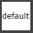

General
Muscle Joints
Muscle joints are simple lightweight joints that can be great for preserving volume, or some piston type parts
Blend Joints
Those are simple joints that rotate a percentage of the main joints. And they have a lot of attributes to make them translate or scale based on their parents' rotation
To add one, just specify the joint in the list.

Then after running that function you'll get that joint. And you can adjust its values:

Mirroring and Saving those values can be done with the DEFAULTATTRS options.
Note
the DEFAULTATTRS thing is a common workflow throughout all the kangaroo tools. Especially when we come to the face
Finger Poses
The fingerPoses() function creates those attributes that poses fingers:

This function is very flexible. With the sPoseKeys you can specify which pose attributes you'd like.
Some of them have the word negative in it, such as armGlobal_l_ctrl.curl negative. In this example it's just
the armGlobal_l_ctrl.curl attribute going negative.
After adjusting the sPoseKeys attribute and clicking the  (reload) button,
you'll get those buttons on the side:
(reload) button,
you'll get those buttons on the side:
Now for each pose:
1. rotate/translate the animation ctrls to put the hands into the pose
2. click the fill button
Inbetween poses you can click the reset button at the top to go back to default. And if you want to see where the fill buttons saved the poses, it's the ddPoses attribute, which you can inspect in the JSON Editor.
Animators usually want the curl additionally for each finger separate:
This happens with the dSeparateFingers attribute.
What about the toes??
For the toes you can just duplicate the function, we'll do that a lot on quadrupeds. Actually the BASEDOG in the templates
has that setup-ed:
Default Pose
Whenever you click the shelf button  (default), the selected rig jumps into default pose.
But how does the button know what's the default?
The ctrls have an attribute called dDefaultAttrs. This is created in the function updateDefaultCtrlAttrDicts().
It is very important to be aware of this, because when you add python code to set some default attributes, it will only
register those as default values if you put that function before the updateDefaultCtrlAttrDicts() function, which
has priority 106.
Works with Namespaces
The default button also works with namespaces! This is very useful when you have a rig referenced.
Python
You can also call the function to put the rig into default pose:
import kangarooAnimation.KangarooMatchTools as KangarooMatchTools;
KangarooMatchTools.goToDefaultPoseSelected(bSkipFk2IkAttrs=False)
ZV Groups
The function addZVGroups() is for the tool ZV Parent Master. You can adjust the sCtrls parameter for which ctrls you would like to have groups for. By default it does these:
armIk_r_ctrl
armIk_l_ctrl
legIk_l_ctrl
legIk_r_ctrl
armWrist_l_ctrl
armWrist_r_ctrl
legAnkle_l_ctrl
legAnkle_r_ctrl